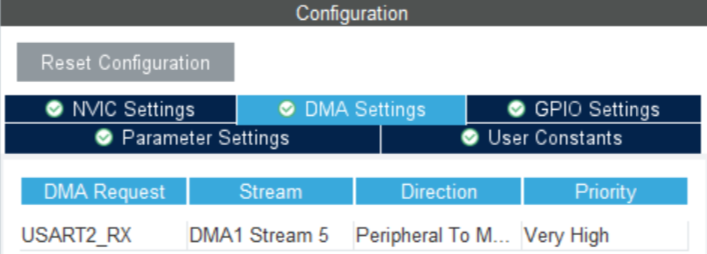

STM32資料 基礎編 3
シリアル通信でデータを受信しよう（割り込み処理）
前回と同じようにシリアル通信を受信するコードを書くことができる
しかし、LEDをつけている間など他の処理をしている間に来たデータについては取りこぼしてしまう
そこで今回は、割り込み処理という手法を使ってデータを取りこぼさないようにしてみよう
今回やること
前回と同じ流れなので、資料に沿って進めてね
作業の流れ
- ピンを割り当てて、割り込みの設定をする
- wrapper.cppにコードを書き込む
- STM32にプログラムを書き込み実行する
- TeraTermでデータを送信する
ピンの割り当て
今回もUSART2を使うので、前回と同じようにPA2とPA3に割り当てをしておこう
割り込みの設定
USART2の設定からDMAを追加しよう
プログラム
割り込み受信の開始
HAL_UART_Receive_DMA(&huart2, receive_buffer, len);この関数の引数（通常の送信や受信とほとんど同じ）
- &huart2
使用するUSARTの種類 - data
送信するデータを指定する - len
送信するデータの長さを指定する
DMAとは
- DMA(Direct Memory Access)
通常はCPUがデータを転送するが、DMAを使うことでCPUを使わずにデータを転送することができる
そのため、受信の処理がより高速に行えるようになる
割り込み受信の間、他の処理が止まってしまうので影響を少なくするために利用している
割り込み受信後の処理
void HAL_UART_RxCpltCallback(UART_HandleTypeDef *huart)この関数は、データを受信したとき（割り込み受信が完了したとき）に自動で呼び出される
この関数内に受信後の処理（受信したデータを判定など）を書くことで、受信後すぐに処理ができる
サンプルコード
実際にDMAを使って受信したデータを送り返すコードを作成した
TeraTermでアルファベット1文字を送信して、同じ文字が帰ってくることを確かめてみよう
uint8_t data[1];
void init(){
//LEDをつける
HAL_GPIO_WritePin(GPIOA,GPIO_PIN_5, GPIO_PIN_SET);
//割り込みの開始
HAL_UART_Receive_DMA(&huart2, data, 1);
}
void loop(){
//LEDを点滅させる
HAL_GPIO_TogglePin(GPIOA,GPIO_PIN);
}
//データを受信したら呼び出される
void HAL_UART_RxCpltCallback(UART_HandleTypeDef *huart){
//受信したデータを送り返す
HAL_UART_Transmit(&huart2, data, 1, 1000);
//割り込み受信の再開
HAL_UART_Receive_DMA(&huart2, data, 1);
}TeraTermでのデータ送信方法
- ローカルエコーの有効化
設定(S)から端末(T)を開き、ローカルエコー(L)を有効化しよう
これでキーボード入力でデータを送信できる
終わりに
今回は、割り込み処理を使ったデータ受信について紹介しました！